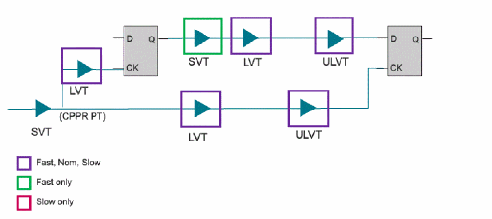

VT Skew Analysis - Overview
Due to variations in the manufacturing process, the voltage threshold (Vth) of a given Vth class (e.g., SVT, LVT, ULVT) may also show variations, resulting in cells of that class operating either faster or slower than the nominal value.
- All cells of a given Vth class are expected to skew in the same direction (faster or slower than nominal) on a single die
- Since the fabrication of different Vth cell classes may be different, it is possible that different Vth classes will skew in different directions (fast vs. slow) on a single die
- Vth classes which share steps in the fabrication process may have correlated variation - they will tend to skew in the same direction on a given die
A robust timing analysis needs to consider the effects of Vth skew. In the past, accounting for Vth skew in the sign-off flow may have been handled by:
- Guard-banding the analysis by having all early timing paths assume the fastest timing of each Vth class, and all late paths use the slowest. This is a quick, but very pessimistic analysis. Any given Vth class cannot be simultaneously skewing both fast and slow.
- Script-based enumeration and analysis of all Vth permutations. This is accurate, but can be very time intensive.
- When using Tempus Vth skew analysis, you may need to adjust your existing settings to make sure to remove any existing guard-band or treatment for modeling Vth variation.
Tempus Vth skew analysis automates the process of selecting which Vth permutations need to be run to ensure a robust analysis - and optimizes these analyses to run quickly and efficiently.
In the following diagram, there are cells belonging to different Vth classes. Since cells from both LVT and ULVT are present in both the launch and data paths, and the capture clock path (downstream from the CPPR point) - nine different analysis are potentially required. For Hold analysis - SVT at fast, LVT at {slow nominal fast} and ULVT at {slow nominal fast}.
Figure -118 Vth skew analysis illustration

VT Skew Analysis Features
To support analysis of different VT skew combinations, the software provides the following features:
- Group timing libraries by user-specified Vth classes.
- Specify fast and slow derates for each Vth class.
- Customize the Vth skew analysis to focus only on the combinations that are relevant to the design.
- An efficient means under path-based analysis (PBA) of timing each potential Vth skew combination, and reporting the path and slack corresponding to the most pessimistic combination.
- Enable analysis with and without Vth skew consideration for in-session comparisons.
Return to top